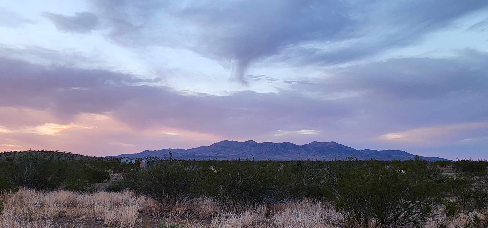

Are you ready to live an unforgettable adventure? Well, let me give you some information about Laughlin Nevada because it is a relaxing and exciting destination with a lot of things to do.
Laughlin is a charming unincorporated riverside town that has so much to offer, from natural beauty to memorable adventures.
It is in the Colorado River valley.
If you are looking to escape snow this winter and create memories, Laughlin might just be the place. And if you live in a region with no snow in winter, you are missing out on the “shoveling exercise”, nevertheless you can still consider Laughlin Nevada for your next trip.
Where is Laughlin Nevada?
Laughlin is in the State of Nevada, more precisely in Clark County. It is nested in the Mojave Desert which means that the lack of trees creates an endless landscape. Imagine a scenery that stretches as far as your eyes can see.
It is situated at the Nevada and Arizona border. In fact, the Colorado River separates the two states. In winter there is an hour difference.
There is a very popular city also located in Clark County, do you know which one? Drum roll … Las Vegas! That’s right, you can take a 90-minute drive and spend the day in Las Vegas. If you love impressive shows and food (like I do), why not spend an evening in Las Vegas!
Another cool feature about Laughlin is that it is located on the Colorado River. You will want to see the beauty of this river and at night, the hotel lights create magic as they reflect off this river.
Bonus! On the other side of the river, you have Bullhead City, located in Arizona. So, you can technically visit 2 states during your getaway. While at it, you can also visit Kingman, Az (Heart of Route 66).
Here is a map of the region with endless places to visit.
Laughlin Strip Map
To get to the strip, you take Laughlin Highway (163) and you turn on Casino Drive.
In the map of the Laughlin Strip below, you can see the blue dotted line, which represents the Laughlin Strip in downtown Laughlin. The strip goes a little passed Thomas Edison Dr.
What Casinos and Hotels are on the strip of Laughlin Nevada?
Here is a list of the casinos and hotels on the Laughlin Strip:
1. Aquarius Casino Resort
2. Colorado Belle Hotel & Casino
3. Edgewater Hotel & Casino
4. Golden Nugget Laughlin
5. Harrah’s Laughlin
6. Laughlin River Lodge
7. Pioneer Hotel & Gambling Hall
8. Regency Casino
9. Tropicana Laughlin
10. Avi Resort & Casino
11. Don Laughlin’s Riverside Resort Hotel & Casino
12. Laughlin River Run
Discovering Laughlin's Outdoor Beauty
Laughlin Riverwalk
Did I convince you to book your next vacation in Laughlin Nv when I said that this town is a riverside town where you can spend quality time with captivating riverside views? (Wow that was a long sentence!) The Riverwalk is the perfect setting for a peaceful moment as you soak in the serene beauty of the gently flowing water.
From Don Laughlin’s Riverside Resort to the Laughlin River Lodge, you can stop in all the different casinos to see what they have to offer. If you are too tired to walk your way back, you can consider taking the river passage water taxi.
Photo Credit Travel Nevada. The Riverwalk in Laughlin, NV
The Majestic Mountains
The first time I discovered the Mojave Desert I felt so small surrounded by all the mountains. The feeling you get in the desert is a very special one, you can see so far away,
A map with Laughlin and 2 important mountains: the black mountain and the Spirit Mountain
Map of the black Mountains
(as there are no trees to block your view) and then your eyes catch the breathtaking backdrop. Laughlin is surrounded by the Black Mountains on the Arizona side and the Spirit Mountain (now called the Avi Kwa Ame National Monument) on the Nevada side.
On March 21, 2023, President Biden established it as a monument. These mountains offer not just picturesque views but also beckon outdoor enthusiasts for exploration.
From reviews that I read; the Avi Kwa Ame National Monument is a very robust hike with one of the most amazing views in the region. If hiking is a little bit outside of your ideal relaxing vacation, but you still want to see the views from the Black Mountains without having to hike, you can do a private guided tour in side by sides with OUI Experience!

Davis Dam, Colorado River, Lake Mohabve and Hoover Dam
When you look at the map below you see the Colorado River (that is just past the Hoover Dam) goes through Lake Mohave to the Colorado River. If you like scuba diving you will love exploring Lake Mohave. It is crystal clear
Sunset magic
I am not going to lie; the Mojave Desert has the most stunning sunsets I have ever seen in my life. Every night is a unique masterpiece. My husband calls them: “rainbow sunsets” because when you look at the sky as the sun sets you see different colors from blues, purples, to pinks and even oranges casting a warm and golden glow over the mountains. Can you imagine looking at this spectacular natural beauty, you remember that this is what makes life magical. You forget about all the less enjoyable moments that you went through in your life, you take a deep breath, and you feel your heart overwhelmed with joy.
Embark on an Adventure: Discover things to do in Laughlin, NV
Laughlin Nevada, located in Southern Nevada, which is part of the Colorado River Valley, has a lot of tourist attractions like visiting the Hoover Dam, the Davis Dam, or Lake Mohave, taking a walk on the Grapevine Canyon Trails, doing a sunset dinner cruise, renting a jetski, doing the jet boat tour to see the London Bridge in Lake Havasu, going through the Laughlin Labyrinths, driving to the Christmas Tree Pass, visiting Bullhead City, Boulder City or the Grand Canyon, visiting Oatman ghost town, admiring the private collection of Laughlin's classic cars at Don Laughlin's Riverside Resort or renting a UTV to off-road in the Desert. From sandy shorelines to slot machines (hopefully lady luck is smiling on you) there is a lot of outdoor activities near Laughlin.
Off-Road Adventure
For a touch of adventure and memories that will last a lifetime, consider off-roading with UTVs. It's a thrilling way to explore the desert terrain and the Black Mountains. And guess who will be your guide? Jake! I can’t promise you that he doesn’t wear khakis sometimes, but I can promise you that he will not sell you insurance from State Farm.
So, who is this Jake anyways? He is my husband and together we own OUI Experience.
But how do you pronounce this and why choose this name? OUI is pronounced “we” because we experience off-roading together, because when you off-road with us you will certainly say “wheeeeee”. OUI stands for Off-road Utv Interactive Experience. It is also yes in French.
Take to the paths less traveled! OUI Experience is here to take you on a private journey through the great outdoors with off-roading at your own comfortable pace! Turn terrain you wouldn’t usually be able to traverse into your playground, beginning an adventure that knows no bounds!
Those mountains you see in the distance and wonder “How does the view look from the top of that?”, well we take you there to see for yourself! Discover the heart of nature at a relaxed pace!
Having set the record in Laughlin and Las Vegas for the oldest male (92 years old who had never off-roaded before) and female (88 years old who had only ever been on a quad when she was younger) to come off-roading on separate trips, this is an experience that has no upper age limits or experience requirements!
You are in for a treat by driving a Can Am 1000 DPS 2-seater UTV. They are comfortable, safe and they have a good amount of power to them.
Our trails are exciting and gorgeous, but not terrifying or overly dangerous! If this still pushes your comfort zone, feel free to choose our new Desert Experience, where you let the professional guide (Jake) take you out to explore in a custom-built Jeep Wrangler.
Explore nature as it was intended, from stunning mountain ranges to Baja areas leading down to serene waters! This is that experience that everyone talks about after, and OUI Experience is here to help you create these memories with only your loved ones that last a lifetime! Why rent a UTV without a guide and risk getting lost, breaking down with no cell service, or missing the best scenic views when you can have Jake show you around for a lower price! It's off roading with your future best friend!
Fishing on the Colorado
Cast your lines into the Colorado River, and you might reel in catfish, bass, or even trout. The local fishermen will tell you stories of the "big one" that got away, the usual excuse to cover up relaxing on the water all day! It's a fantastic way to unwind while enjoying the great outdoors and perhaps creating your own “oh darn he got away!” tale. If you like fishing and are planning a trip to Laughlin Nevada, don't forget your fishing gear. You can reserve the best guided fishing trip or bring your own fishing rod and enjoy the sunrise on the Colorado River.
Laughlin River Tours on the Mighty Colorado River
For an ultimate relaxing adventure, think about taking a river cruise with Laughlin River Tours. Drift along the Colorado River, sip on your favorite beverage, and take in the sights and sounds of Laughlin. You'll hear stories of the river's history, wildlife, and local legends, making each cruise a journey through time.
You can also rent Jet skis or boat tours to ride on the majestic Colorado River all the way to Davis Dam. You will not be able to reach Lake Mohave because of the Davis Dam but your jet ski could theoretically bring you to Lake Havasu City and admire the London Bridge (if you plan places to put gas).
USS Riverside
If you want to go nearby Davis Dam this narrative boat tour is for you. USS Riverside takes you on this 90 minute long adventure and talks about the history of the town and the casinos.
Laughlin Labyrinths
Christmas Tree Pass
Christmas Tree Pass road brings you to Grapevine Canyon Trail.
Hiking Trails
There are a lot of beautiful hiking trails near Laughlin but my favorite is the Grapevine Canyon with it's seasonal waterfalls.
You can find native American Petroglyphs in Grapevine Canyon on the Spirit Mountain. The area is also known as Christmas Tree Pass. While the petroglyphs extend through the canyon, a significant concentration lies at the entrance to the canyon which is at an elevation of 2,395 feet (730 m). The area features over 700 petroglyphs and many rock shelters.
Big Bend of the Colorado State Recreation Area
The Big Bend of the Colorado is a recreation area with sandy shoreline. It is a beautiful area for the family to relax on an awesome beach with BBQ area.
Lake Havasu City
Did you know that THE London Bridge is in Lake Havasu? Robert McCulloch bought the London Bridge for $2,460,000. There is a jet boat tour that brings you from Laughlin Nevada to the London bridge of Lake Havasu. This jet boat tour goes through beautiful Topock Gorge and taking in views of volcanic rock faces and Native American Petroglyphs, but you’ll also get to spot a host of river birds and wildlife along the way.
Did the section on off-roading thrills seem longer than the other sections? It is probably because Jake and I are proud of our business and want to meet you and make your travel as unforgettable as possible (also it is the activity that we are passionate about). For other activities that Laughlin offers, here is an article on the top 10 activities near Laughlin.
Create Cherished Memories on your next Trip to Laughlin Nevada
It feels good to go on a trip and it feels good to come back home after a trip. I always feel rejuvenated and energized when I get back home even from a small getaway.
With today’s life we often get so busy and don’t take the time to appreciate our life.
Laughlin offers a unique mix of natural and adventure, making it the perfect destination for your relaxing yet thrilling getaway. Whether you're strolling by the river, exploring the mountains' hidden trails, exploring the Grand Canyon, wanting to do one of the boat tours, renting a jet ski, admiring Laughlin's classic car collection, exploring the historic town of Oatman, walking in Grapevine Canyon or Laughlin Labyrinths, driving to Christmas Tree Pass, exploring Lake Havasu, exploring the Colorado State Recreation Area, going with your children to a children's play area or embarking on off-road UTV adventures, Laughlin has something to offer every adventurer.
Take the time to live life!
Are you ready to explore Laughlin and embark on unforgettable adventures? Reach out to us at Oui Experience, for an unforgettable Off-road tour and we can help you plan the perfect adventure for you and your loved ones. Your relaxing adventure is just around the corner, and the memories you'll make are sure to last a lifetime.
Contact OUI Experience now to start your journey or follow us on social media for the latest updates and inspiration. www.ouiexperience.com